Anatomy of a Move
Every attack in a game can be broken down into three phases. Understanding these phases is the foundation for applying hit feel techniques at the right moment.
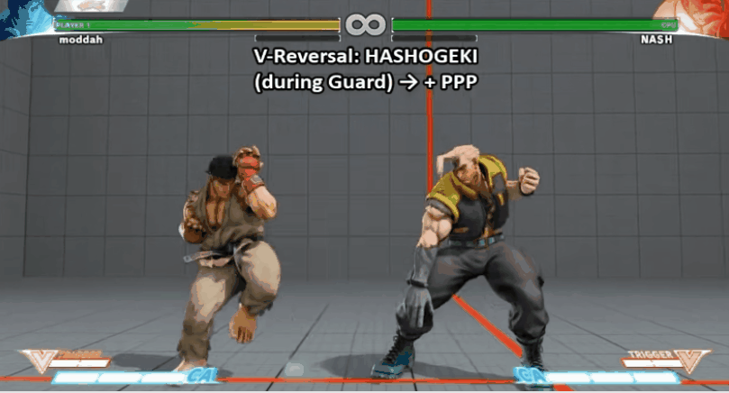
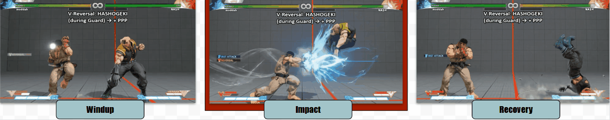
Character Reactions
How the hit target reacts is one of the most important signals of impact. The approach differs based on whether the character can be interrupted.
Interruptible Characters
- Immediate pose changes — snap into a reaction state with no delay
- Respect the directionality of hits — a blow from the right should push the character to the left
- More dramatic pose changes for bigger impacts — scale the reaction to the power of the move
- Translation and combo reactions — physical displacement adds to the sense of force
Reference: Doom (2016) Hit Reactions Talk
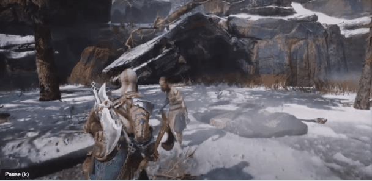
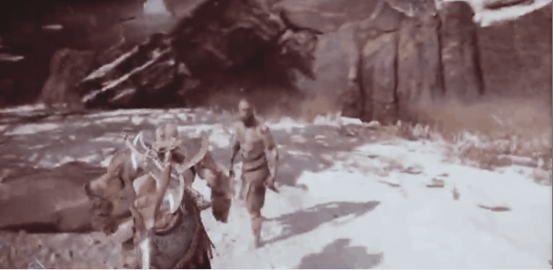

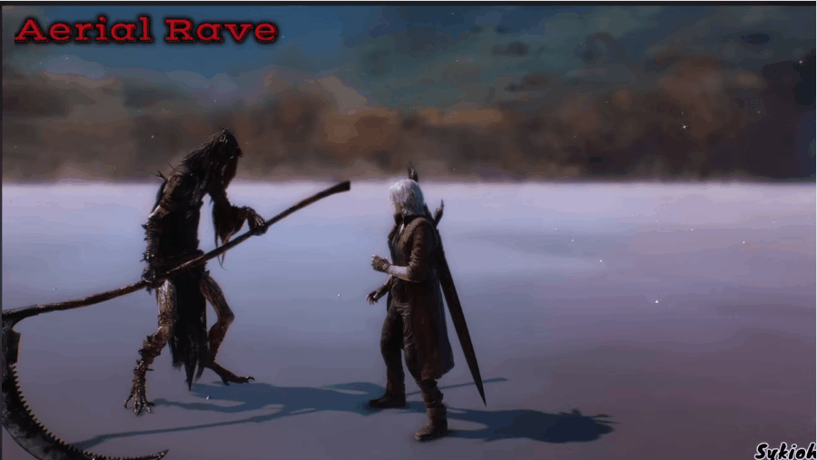
Non-Interruptible Characters
- Full animation interruption is not possible, but directionality of the hit can still be respected
- Use twitch/additive layers, root shake, and shader jiggle to sell the impact without breaking the animation
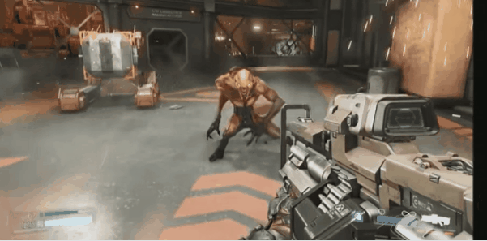
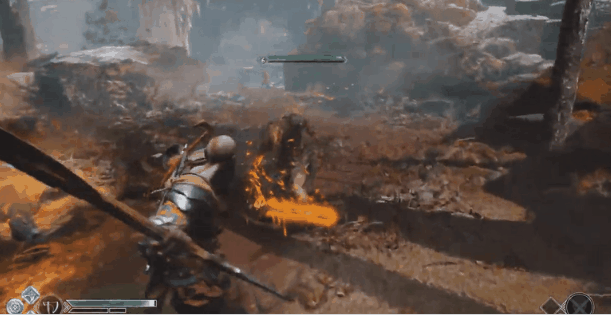
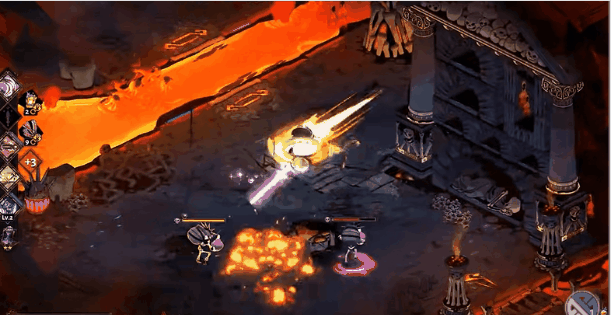

Hit Flash
A rapid contrast or saturation spike on the target at the moment of impact. One of the fastest, cheapest, and most effective hit feel tools available.
- Immediate contrast/saturation change on the frame of impact
- Masked overlay — not uniform across the mesh; concentrated at the point of contact reads more believably
- Tune the fade-out speed to match the weight of the hit
- Color can represent damage type (e.g., red for physical, blue for elemental, yellow for electric)
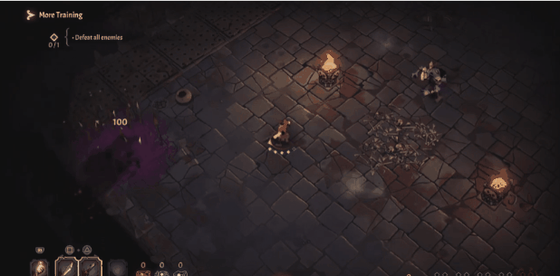
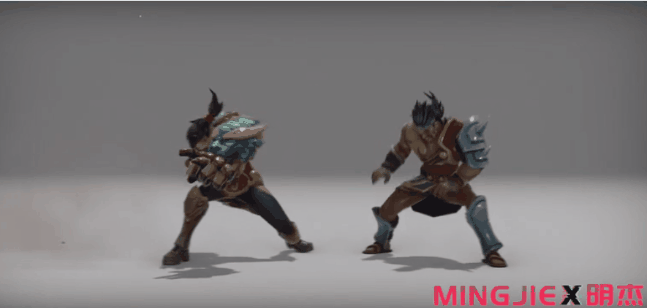
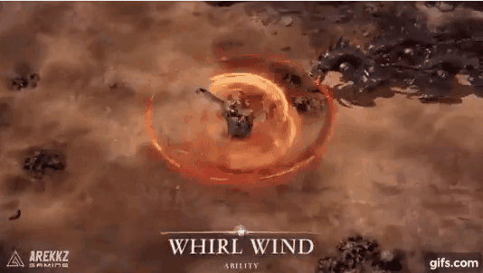
Impulse
Physical translation applied to the attacker or target as a result of the hit.
- Helps forward-translating player attacks avoid grinding against the target instead of landing cleanly
- Bigger translation communicates bigger power — scale impulse magnitude with move strength
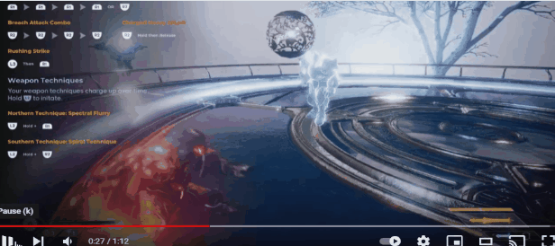
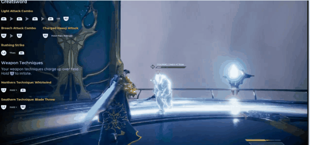
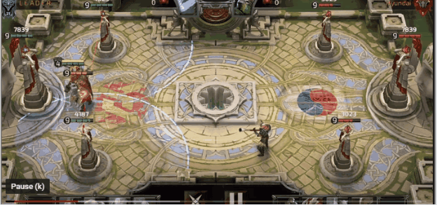
Visual FX
Impact particle effects and sparks that fire at the point of contact.
- Impact sparks should respect the directionality of the attack
- Encapsulate the hit volume and number of hits within the VFX burst
- Scale the effect to represent power — use color variation, scale, and additional layers for high-power hits
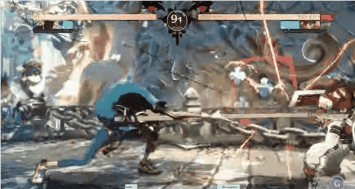
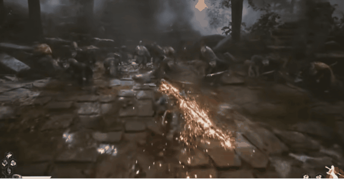
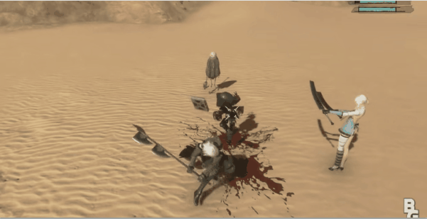
Camera Shake
Shaking the camera communicates physical weight and the intensity of an impact.
- 3D vs 2D — different axes of shake feel different; match to the genre and perspective
- Amplitude — how large the displacement is; scale with hit power
- Frequency — how fast the shake oscillates; higher frequency can feel lighter, lower frequency heavier
- Shake towards impact (Vlambeer technique) — briefly push the camera toward the direction of the hit before the shake, which reinforces directionality and feels more intentional
- Networked games — keep camera shake local to the client; allow stacked implementations so multiple hits compound naturally
Reference: Juicing Your Cameras — GDC 2016 (Eiserloh)
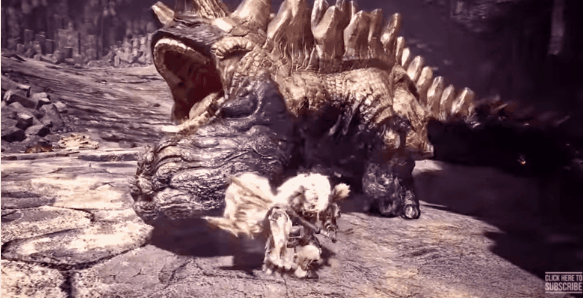
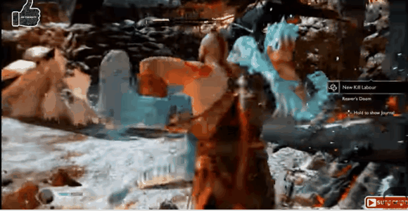

Hit Pause
A very brief freeze of the game (typically 2–8 frames) at the moment of impact. This is one of the most impactful techniques for selling the weight of a hit.
- Freezes both the attacker and the target to emphasize the collision
- In networked games, full game pause is not viable — simulate with a weapon or animation pause on the local client instead
Reference: Hit Pause Explanation
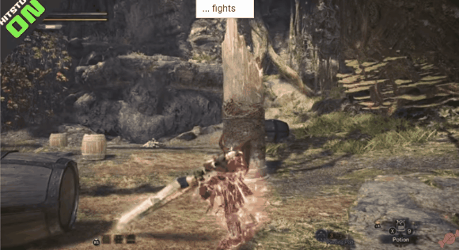
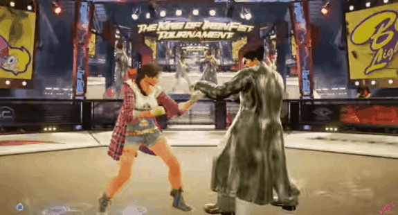
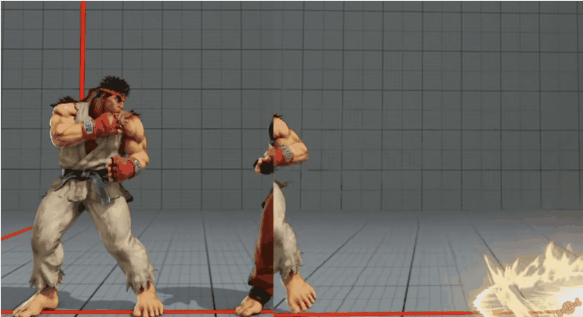
Slow Time
Reducing time scale at key moments to give the player time to appreciate a powerful hit or cinematic moment.
- Slow time globally — applied to everything in the world
- Slow time on player and target only — everything else continues at normal speed, useful for maintaining world believability
- Global slow time is commonly used for Parry, Kill, and Guard Break moments
- Networked games — limit slow time to the local player and their target to avoid desync
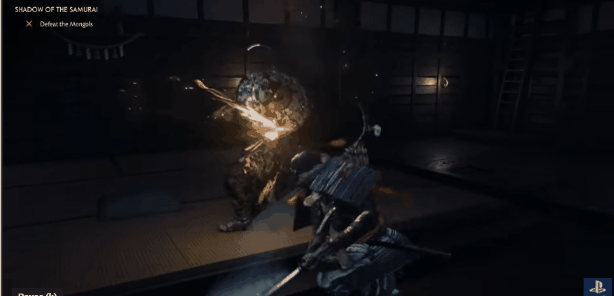
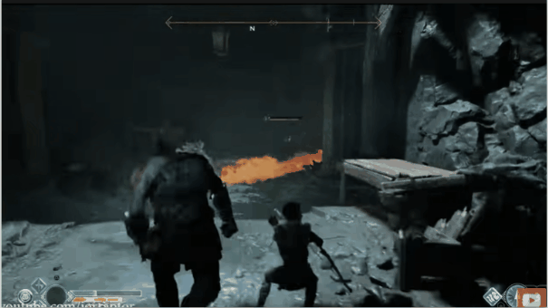
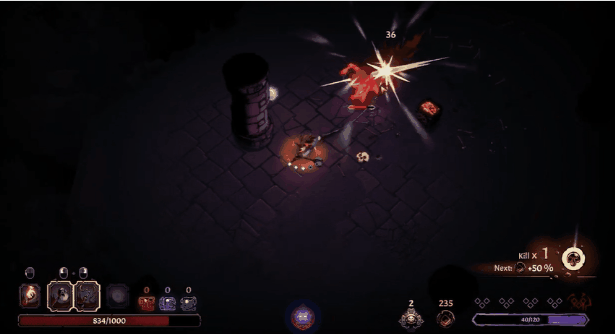
Death
The final hit deserves its own special treatment. Death is a payoff moment and should feel distinctly different from normal hit reactions.
- Exaggerated reaction animations that exceed what the attack physically implied
- Shader tricks such as dissolve effects
- Ragdoll physics for physical believability and variety
- Slow time to let the moment land
- Dedicated VFX and SFX — death should sound and look different
- Translation — big hits send enemies flying
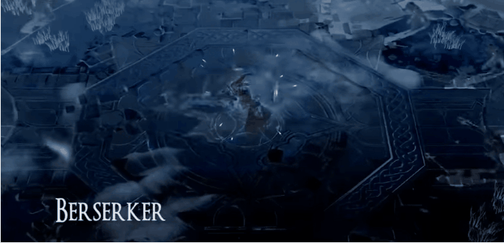
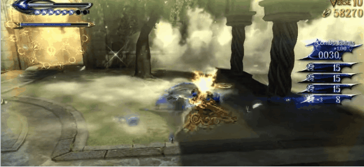
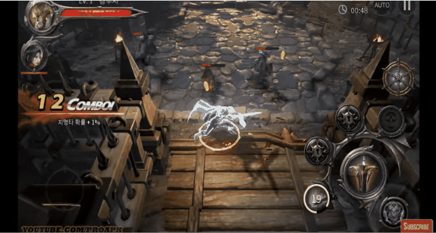
Screen-Space Effects
- Screen tints — color overlay to communicate damage type or severity
- Luminance inversion — high-contrast flash for extreme hits
- Screen filters / 2D shaders — post-process effects applied on impact
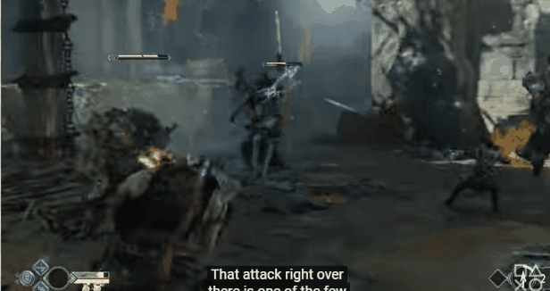
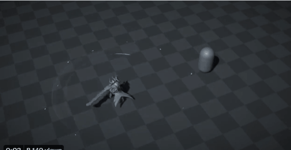
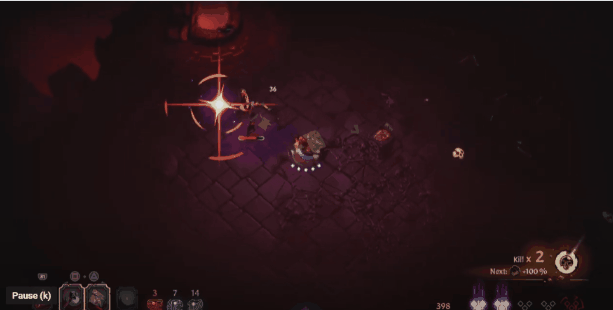
Camera Effects
- Camera zoom — a quick push-in during a powerful hit adds drama
- Depth of field — briefly blurring the background isolates the moment
- Blur — motion blur or radial blur on impact adds speed and weight
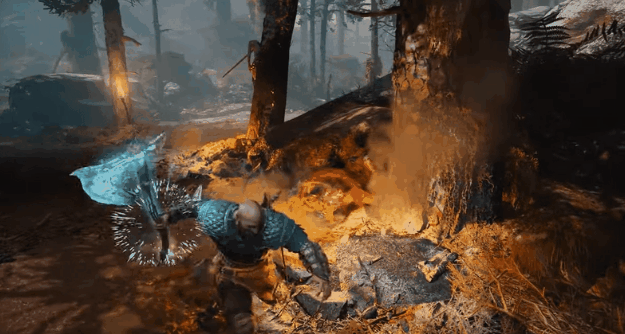
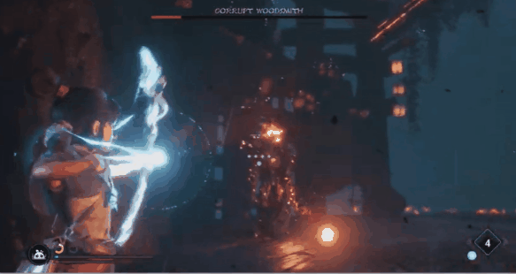
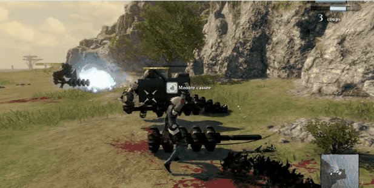
UI: Health Bars and Damage Text
- 3D vs 2D — world-space vs screen-space presentation affects how readable and dramatic the feedback is
- Health bar flash, brief pause, and lerp-to-new-value rather than instant update — the delay makes damage feel weighty
- Spiky, expressive damage number typography
- Dedicated treatments for critical hit moments
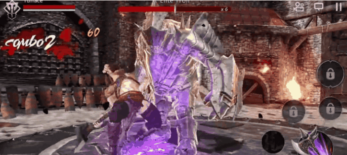
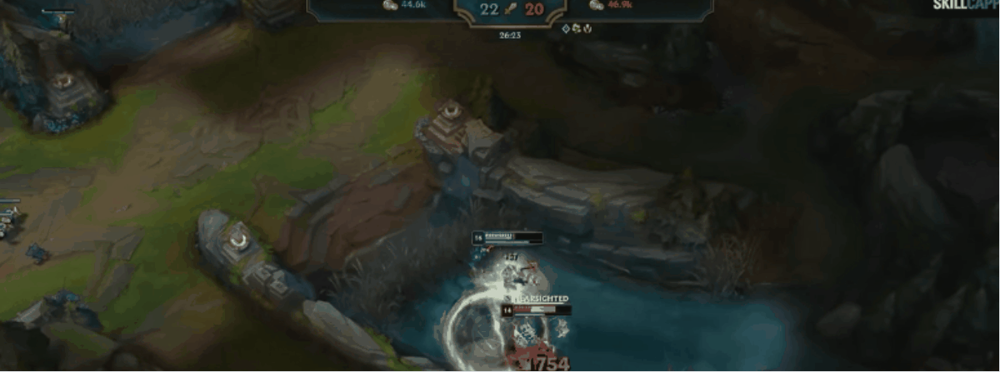
Audio and SFX
Sound design is often what separates a hit that feels powerful from one that feels empty.
- Impact / multi-hit sounds — each hit needs its own audio event; layering sub-hits builds complexity
- Voice over — VO on impacts (grunts, effort sounds) dramatically increases perceived physicality
- Silence as anticipation — brief audio drop before a big hit builds tension and makes the impact hit harder
- Contrast — not every hit should sound the same. Pull back on lighter hits so heavy hits feel genuinely heavy
Key Audio Principles
- If everything is big, nothing is big. Identify the high points and pull back elsewhere so those moments feel more satisfying. Limit the frequency range you use — reserve high-end and low-end as effect moments so they feel special when they appear. Fighting games handle this well.
- Dryness and proximity in the mix communicates how close and immediate a hit feels. Star Wars' kill/execute and block SFX play with this a lot.
- A wider stereo image sweetens a moment and adds size and weight to hits. God of War uses this extremely well.
- Anticipation can add to satisfaction. The lead-up to the hit can be as important as the hit itself. VO helps this a ton, as seen in the Lost Ark fighter clip.
- Make space for the moment. This can be done through mix (Hades handles this well), through gameplay pacing, or a combination of both. God of War's execute moment and axe catch, Guilty Gear Strive's counter moment, and Elden Ring's execute all feel more satisfying because they pause to focus on those moments.
Combos (Pacing and Directionality)
Individual hits only tell part of the story. The sequence of hits — how they flow into each other — is what defines the feel of a combat system.
Visual Flow / Continuity
Attacks should feel connected to each other. The end of attack 1 is essentially the windup for attack 2. As a whole, the sequence should feel like one fluid string.
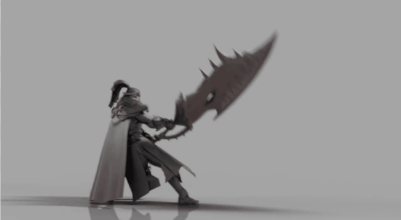
Progressive Rhythm
Most strong combo sequences use a bunch of similarly-timed linkers that build into a strong, powerful finisher. The rhythm of jab > jab > jab > power-up > big attack is a reliably satisfying pattern that works every time.
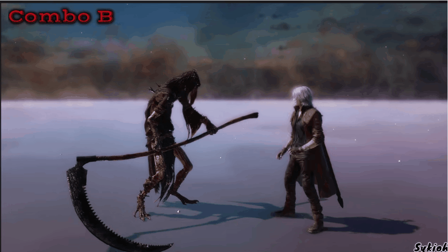
Focus on Finishers
Everything in the combo is in service of the finisher move. Pay it off by putting enemies into big hit reactions, or dropping them into an exposed state for further follow-up.
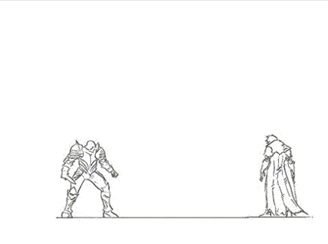
Exaggerated Force Transfer
The reaction on the victim should be correct in direction and type, but the intensity should be bigger than what was implied by the player's animation. Aim for a "more-than-equal opposite reaction." A player character doing fairly realistic punches should send a large enemy reeling as if hit by Superman — this is what makes it feel like power rather than normal physicality.

Animation: Energy Transfer and Recoil
Animation is the backbone of hit feel. The attacker's animation needs to sell energy going into the target — and the target's animation needs to sell energy coming out.
- Secondary animation layers add organic detail (follow-through, overlapping action on cloth and hair, weapon wobble)
- Recoil on the attacker communicates that something resisted the blow
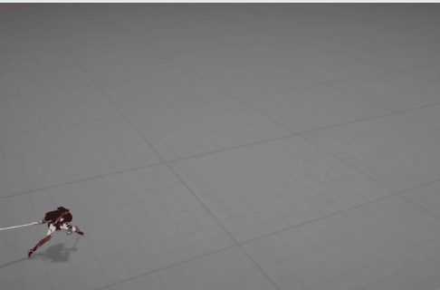
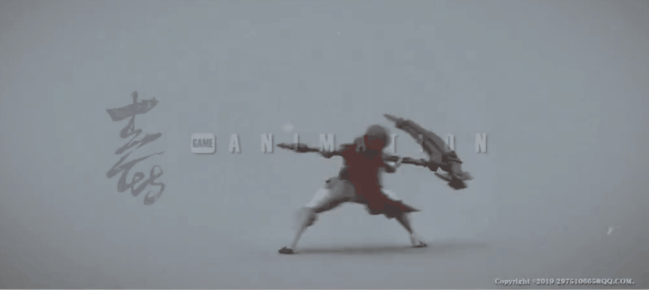
An additional nuanced technique is to use IK to further enhance the feeling of heaviness on a weapon
- In the example below, Kratos' axe is embedded into the target surface on hit and is sped up to catch up to the animations after a short delay
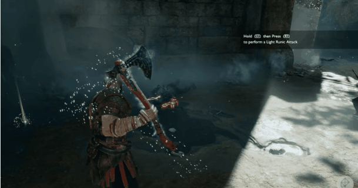
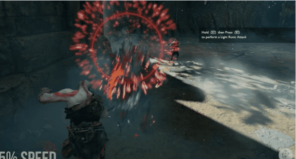
Reference: God of War — Weapon Embed IK
Networked Games
Not all hit feel techniques are viable in networked games. Even the ones that are need to be reconfigured to respect the server and multiple players.
- Determine which elements exist on the local client vs the networked client
- Determine the appropriate intensity for each — usually lower on networked clients to avoid appearing wrong when server reconciliation occurs
- Invest in prediction to get juicy hit feel firing early, then blend into the replicated result once the server has validated the hit
Final Notes
- Choose the right hit feel techniques to use — and which ones to avoid — for your specific game
- Establish a base set of rules for hit feel across the game so it's consistent
- Break those rules intentionally for contrast — for more unique or powerful moves
- The combination of many techniques is where the magic happens, but the timing of when each one fires is critical
- Ensure hit feel doesn't obscure clarity — the player must still read what happened
- Provide options to enable, disable, or tune certain features for accessibility reasons